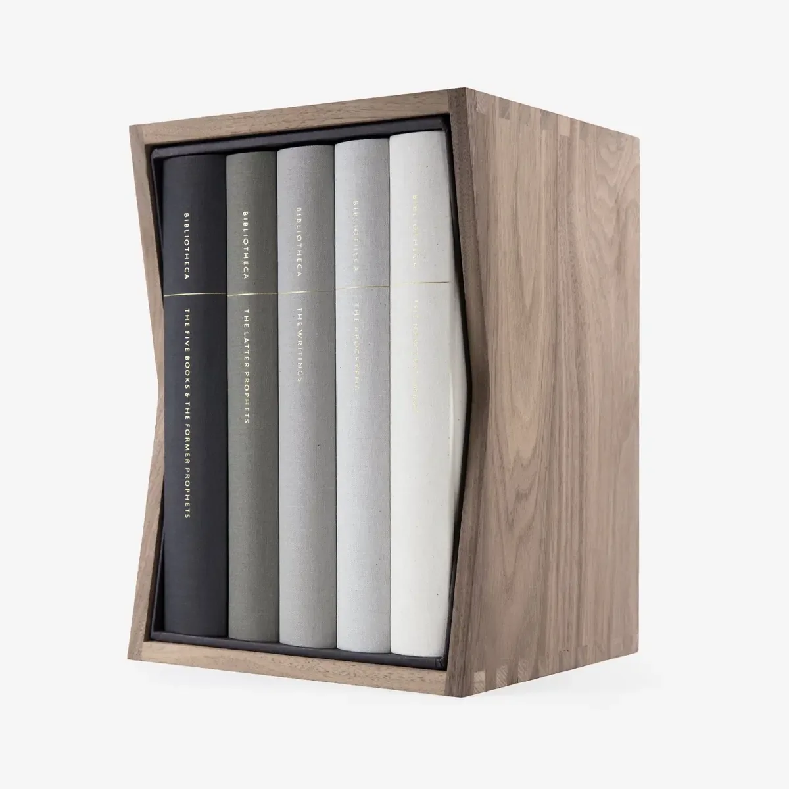
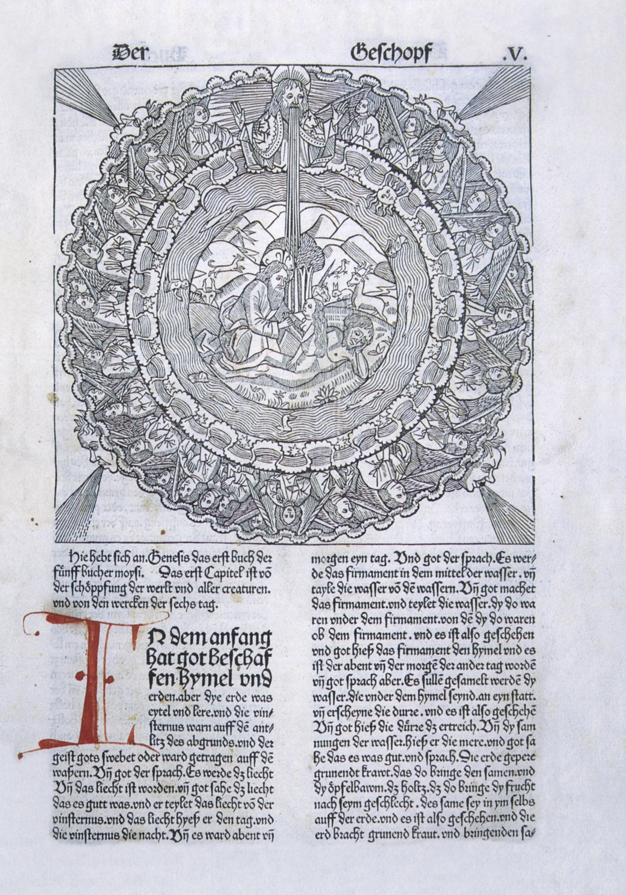
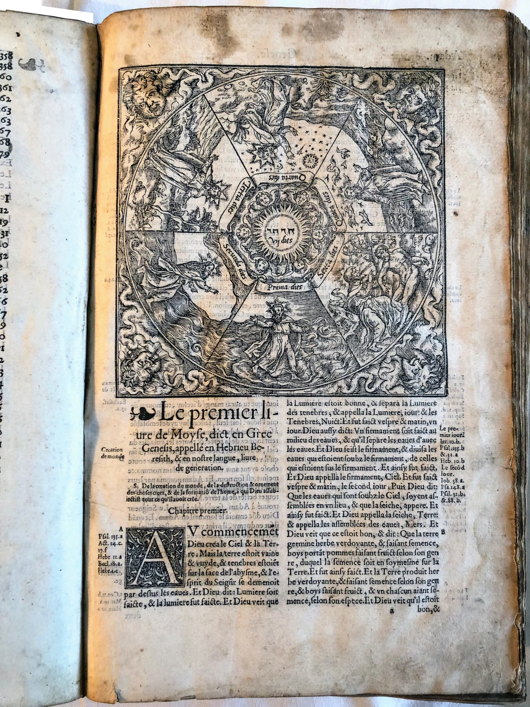
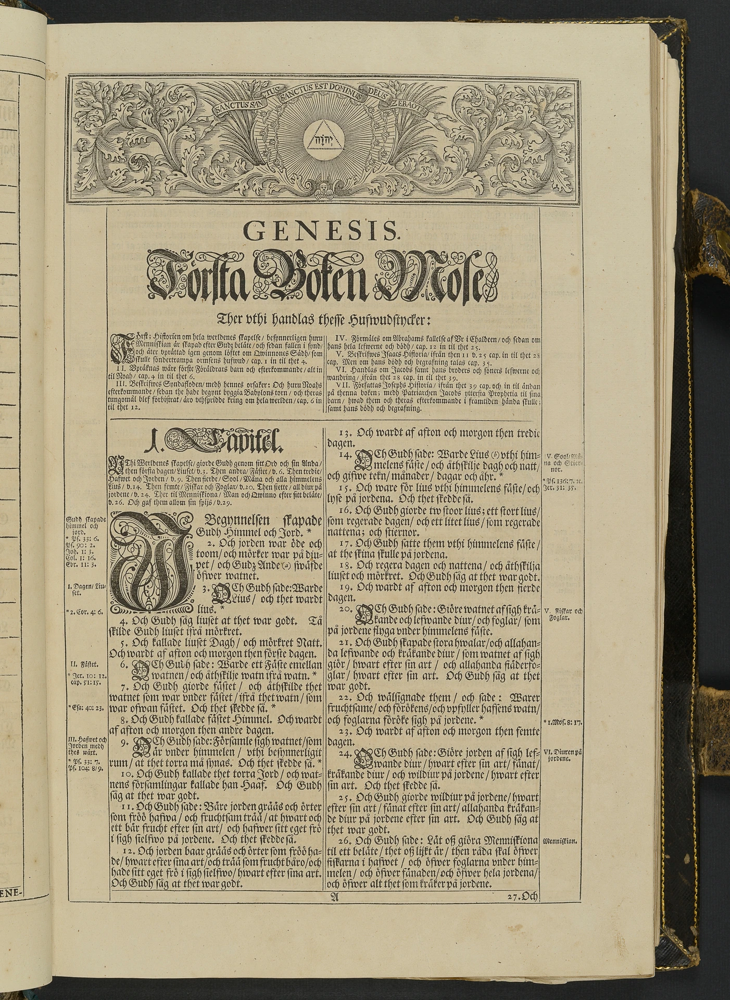
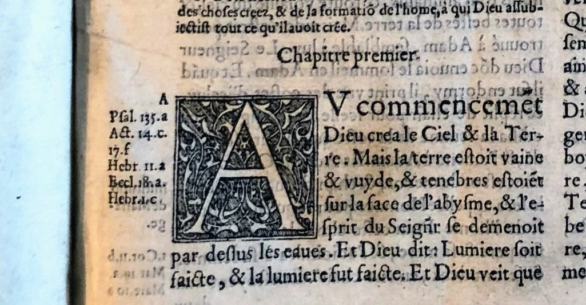
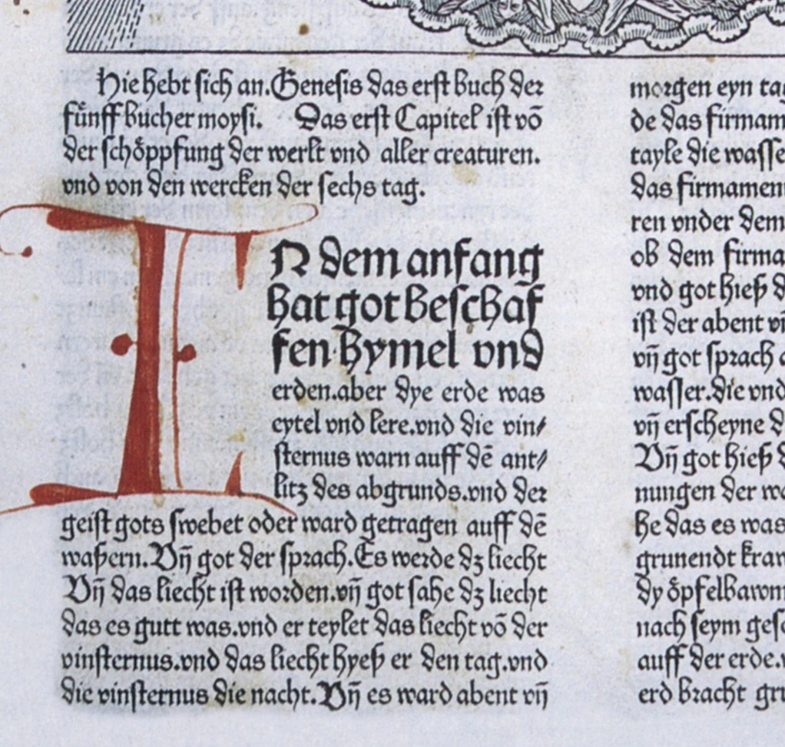

아직 펼치지 않은 카드다시 그리고 다시 만드는 성경 · 4아름다운 현대 성경 판본성경에서 장과 절 번호를 모두 뺀다면, 읽는 느낌은 어떻게 달라질까요?번호가 하나도 없는 성경이 있대! 이야기책처럼 읽는대.
1483년 ~ 2016년뉘른베르크 · 루뱅 · 스웨덴 · 미국
아름다운 현대 성경 판본
성경은 처음부터 장과 절로 나뉘어 쓰인 책이 아니에요. 같은 창세기 첫 장을 1483년, 1550년, 1703년의 책과 2016년의 비블리오테카(라틴어로 ‘도서관’)로 차례로 펼쳐, 번호가 어떻게 생기고 다시 사라졌는지 보세요.
옛날 성경에는 장과 절 번호가 없었대. 번호가 생겼다가, 요즘 다시 번호를 뺀 성경도 나왔어. 시간 막대를 밀어 볼까?
검수 전 시안이에요(기준서 2판). 장과 절의 역사는 독일 뷔르템베르크 주립도서관의 글과 『새 샤프-헤르초크 종교 백과사전』을, 책마다의 사실은 뮌스터 대학교 성서박물관, 독일 디지털 도서관, 토론토 대학교, 브리태니커, 스웨덴 교회, 비블리오테카 공식 누리집에 있는 것만 옮겼어요. 같은 곳이 아니라 같은 쪽(창세기 1장)을 견주었고, 2016년은 본문 쪽 대신 책 상자 사진이에요. 상상은 ‘눈 감고 상상해 보기’에만 썼어요. 2026년 11월 22일 ‘더 깊이’(열쇠 물음 셋과 뒷이야기)를 얹으며, 그린의 인터뷰(바이블 게이트웨이) · 브리태니커 · 샤프-헤르초크 · 『크리스채너티 투데이』를 열어 확인했고, 그림 속 인쇄 글자는 그림을 열어 보고 옮겼어요.
시안 확인용카드 단계 미리 보기
1
같은 첫 장, 네 때의 책
성경을 쓴 사람들은 장과 절을 나누지 않았어요. 지금 쓰는 장 나누기는 13세기 초 파리 대학에서 가르치던 스티븐 랭턴(Stephen Langton)에게서 왔고, 절 번호는 그보다 300년쯤 뒤에 생겼어요.
같은 창세기 첫 장을 네 때의 책으로 펼쳐 볼게요. 같은 곳을 찍은 그림이 아니라, 같은 쪽(페이지)을 담은 그림들이에요. 시간 막대를 밀어 번호가 어떻게 생기고 사라지는지 보세요.
시간 막대를 밀거나 해를 눌러, 창세기 첫 장을 네 때의 책으로 펼쳐 보세요. 같은 곳이 아니라 같은 쪽(페이지)을 담은 그림이에요.



1483년 · 창세기 1장 · 코베르거 성경(뉘른베르크, 1483년) · 이스니 설교자 도서관 소장본 · 찍은 이: 안톤 코베르거 · 퍼블릭 도메인 · 위키미디어 공용1550년 · 창세기 1장 · 루뱅의 프랑스어 성경(1550년) · 번역: 니콜라 드 뢰즈 등 · 퍼블릭 도메인 · 위키미디어 공용1703년 · 창세기 1장 · 카를 12세 성경(스웨덴, 1703년) · 스웨덴 문학은행 디지털본 · 스웨덴 문학은행(Litteraturbanken) · 퍼블릭 도메인 · 위키미디어 공용2016년 · 사진: FactDoubleCheck · CC BY-SA 4.0 · 위키미디어 공용
네 때를 다 지나왔어요. 같은 첫 장에 번호가 없다가 생기고, 다시 사라졌어요.
랭턴은 인용하기 쉽게 하려고 장을 나눴다고 해요. 절 번호가 퍼지기 전까지, 신학자들은 흔히 장까지만 밝혀 인용했어요.
지금의 신약(성경의 뒷부분) 절 번호는 1551년 제네바에서 찍은 로베르 에스티엔(Robert Estienne)의 그리스어·라틴어 신약에서 왔어요. 그는 1553년 프랑스어 성경과 1555년 라틴어 성경에도 같은 방식을 썼어요. 창세기가 있는 구약의 절 나누기는, 그보다 훨씬 오래된 히브리어 사본에서 왔어요.
1550년 루뱅에서 이 성경을 읽는 사람이라면, 친구에게 창세기 첫 장의 ‘빛이 생긴’ 대목을 어떻게 알려 줄까요?
옛날 성경에는 번호가 없었대. 시간 막대를 밀면 숫자가 생겼다가, 마지막에 다시 사라져.
물어보기번호가 없으면 친구에게 읽을 곳을 어떻게 알려 줄까?
눈 감고 상상해 보기
2016년 겨울, 나무 상자에서 첫 권을 꺼내 펼쳐요. 쪽마다 장·절 번호도 장 제목도 없이 글이 이어져요. 손가락으로 줄을 따라가다, 어디서 멈출지 몰라 한참을 더 읽어요.
눈을 감아 봐. 번호가 하나도 없는 책을 펼쳤어. 이야기가 끝없이 이어져. 어디서 멈출까?
나의 자리
장과 절 번호가 없다면, 나는 어디에서 읽기를 멈추고 어디에서 다시 시작할까요?
번호 없는 성경을 읽는다면, 어디까지 읽고 책갈피를 꽂을래?
마음에 닿는 한 줄을 고르거나 직접 써 보세요. 한 줄을 남기면 이 자리의 도장이 찍혀요. 이 기기에만 저장돼요.
더 깊이
이야기를 보다 궁금해질 만한 것들이에요. 답을 읽거나 짧은 영화로 보세요.

1550년 여백의 ‘Psal. 135.a’, 1703년의 ‘Ps. 33: 6’은 뭐예요?

장과 절 번호를 빼면, 읽는 느낌이 어떻게 달라져요?
뒷이야기
아직 펼치지 않은 이야기예요. 누르면 이야기가 펼쳐지고 색이 돌아와요. 더 알고 싶으면 근거를 따라가 보세요.
다 펼치면, 다음에 오실 때 새 이야기가 찾아와요.
오늘의 뒷이야기는 여기까지예요. 다음에 오시면 새 이야기가 기다리고 있어요.
펼친 뒷이야기 · 누르면 다시 볼 수 있어요
더 찾아보기
기록마다 다른 점
말 위에서 나눈 절? 에스티엔이 1550년 파리에서 리옹으로 말을 타고 가다 심심해서 절을 나눴다는 이야기가 있어요. 뷔르템베르크 주립도서관은 이를 전설로 소개해요. 샤프-헤르초크 백과사전은 아들의 말대로 여행 중이었다 해도, 길가 여관에서 쉬며 했을 것이라고 봐요.
네 권일까, 다섯 권일까 2014년 모금 때 소개된 비블리오테카는 네 권짜리였어요(『크리스채너티 투데이』). 다 만든 책은 다섯 권이에요(공식 누리집).
카를 12세 성경의 해 브리태니커는 1703년, 스웨덴 교회의 한 교구 누리집은 1702~1703년에 나왔다고 적어요.
절 나누기에 대한 비판 샤프-헤르초크 백과사전은 에스티엔의 절이 글을 토막 내고 문장 한가운데를 끊는다는 거센 비판을 받았지만, 찾아보기에 좋은 쓸모가 그보다 크다고 적어요.
네 때를 지나 금박
1483년부터 2016년까지 네 때를 모두 지나오면 카드에 금박이 입혀져요.
1483년부터 2016년까지 네 때를 모두 지나오기
1550년 독자의 자리에서 채색
둘 가운데 하나만 해도 카드가 채색돼요.
1550년의 독자라면 읽을 곳을 어떻게 알려 줄지 고르기
아이와 함께 ‘영화처럼 보기’를 끝까지 보기
근거 보기 (17)
- 에버하르트 츠빙크, 「16세기 인쇄 성경의 첫 절 번호」(뷔르템베르크 주립도서관, 2011) — 장 나누기는 스티븐 랭턴(1150~1228), 절 번호 전에는 장까지만 인용, 1509 르페브르의 시편 절, 1527/28 파리·1531 리옹은 시편만, 1528 파니니의 리옹 라틴어 성경(뒤따름 없음), 1551 제네바의 에스티엔 신약, 1553 프랑스어·1555 라틴어, 말 탄 이야기는 전설, 1560 제네바 영어 성경, 1569 하이델베르크, 1586 비텐베르크
- 『새 샤프-헤르초크 종교 백과사전』(1908~1912) 「Chapter and Verse Divisions」(bible-researcher.com) — 랭턴이 인용하기 쉽게 장을 나눔, 휴고의 일곱 토막 A~G, 콘라트(1290년 무렵)의 A~D, 절 번호 뒤에도 오래 쓰임, 1551년 신약 절, 아들의 말과 여관에서 했을 것
- 비블리오테카 공식 누리집 More Info — 애덤 루이스 그린, 2014년 킥스타터, 목표 37,000달러를 하루 만에, 30일 144만 달러·15,000명 가까이, 다섯 권, 장·절 표시와 장 제목 없음, 한 단, 직접 만든 글꼴, 독일 제본소, 문학처럼 읽게
- 『크리스채너티 투데이』(2016년 11월) — 15만 권을 10월에 컨테이너로 보내 12월에 받게 함, 15,000명이 두 해 기다림, 네 권짜리 한 단 성경으로 소개, 장·절 번호와 각주를 뺌
- 독일 디지털 도서관(바이에른 주립도서관 디지털본) — 코베르거 성경 1483은 멘텔린 성경(1466) 뒤 아홉째 독일어 인쇄 성경, 쾰른 성경(1478/79 무렵)의 목판화를 가져옴
- 뮌스터 대학교 성서박물관, 코베르거 성경 1483(HKS 193) — 인쇄기 24대·일꾼 100명 가까이, 586장, 목판화 109점, 1,000~1,500부, 인쿠나불라
- 토론토 대학교 르네상스·종교개혁 연구소 희귀본, 루뱅 프랑스어 성경 1550 — 제목(장마다 요약·관련 구절·여백 주석), 1550년 9월 루뱅, 르페브르 번역을 루뱅 신학부가 고침(니콜라 드 뢰즈·프랑수아 드 라르방), 카를 5세의 특권
- 바트 어만 블로그(2026년 1월 13일) — 장은 13세기 초 파리 대학 강사 스티븐 랭턴이 라틴어 성경에 넣음, 1551 신약·1555 라틴어 성경 전체의 절, 아들이 말한 ‘말 위에서’
- 브리태니커, Gustavus Adolphus Bible — 1618년 고친 판, 1703년 에리크 벤젤리우스가 조금 고친 판, 카를 12세 때 찍어 그 이름
- 스웨덴 교회 폴쿵아뷔그덴 교구, 「교회에서 볼 수 있는 성경들」 — 1618 구스타브 2세 아돌프 성경의 절 나누기로 읽기 쉽게, 카를 12세 성경 1702~1703
- 위키미디어 공용 — 1483 코베르거 성경 창세기 1장(이스니 설교자 도서관, 퍼블릭 도메인)
- 위키미디어 공용 — 1550 루뱅 성경 창세기 1장(퍼블릭 도메인)
- 위키미디어 공용 — 1703 카를 12세 성경 창세기 1장(스웨덴 문학은행, 퍼블릭 도메인)
- 위키미디어 공용 — 앞면 그림: 비블리오테카 다섯 권과 상자(사진: FactDoubleCheck, CC BY-SA 4.0)
- 바이블 게이트웨이 블로그 「A Bible Designed for Beautiful Reading: An Interview with Adam Lewis Greene」(2014) — ‘비블리오테카는 라틴어로 도서관, 책장’, 책 · 시 · 편지의 모음집, 히브리 성경은 전해 오던 갈래로 세 권 · 신약 한 권, 번호 매긴 백과사전 꼴은 저자들의 생각과 다름(재벌)
- 비블리오테카 공식 누리집 About — 장 · 절 번호, 소제목, 관주, 주석을 모두 뺌, 1901년 ASV를 고친 「American Literary Version」, 글꼴 카타로스(재벌)
- 브리태니커 백과사전 「Stephen Langton」 — 파리 25년, 1207년 대주교, 마그나 카르타 사태, 1215년 러니미드, 1225년 다시 펴냄(재벌)
그림·사진·소리 출처
- 찍은 이: 안톤 코베르거 · 퍼블릭 도메인 · 위키미디어 공용
- 번역: 니콜라 드 뢰즈 등 · 퍼블릭 도메인 · 위키미디어 공용
- 스웨덴 문학은행(Litteraturbanken) · 퍼블릭 도메인 · 위키미디어 공용
- 찍은 이: 안톤 코베르거 · 퍼블릭 도메인 · 위키미디어 공용
- 찍은 이: 안톤 코베르거 · 퍼블릭 도메인 · 위키미디어 공용
- 번역: 니콜라 드 뢰즈 등 · 퍼블릭 도메인 · 위키미디어 공용
- 번역: 니콜라 드 뢰즈 등 · 퍼블릭 도메인 · 위키미디어 공용
- 스웨덴 문학은행(Litteraturbanken) · 퍼블릭 도메인 · 위키미디어 공용
- 번역: 니콜라 드 뢰즈 등 · 퍼블릭 도메인 · 위키미디어 공용
- 스웨덴 문학은행(Litteraturbanken) · 퍼블릭 도메인 · 위키미디어 공용
- 스웨덴 문학은행(Litteraturbanken) · 퍼블릭 도메인 · 위키미디어 공용
- 사진: FactDoubleCheck · CC BY-SA 4.0 · 위키미디어 공용
‘처음 만나는 기독교 문화’의 깊은 카드예요. 카드 단계와 남긴 글은 이 기기에만 저장돼요.